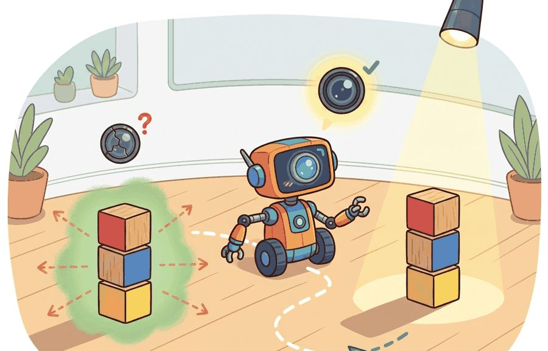
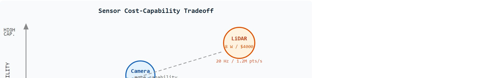

Section 8.1: What sensors provide and what they cost
"Every sensor gives you a window onto the world; it also hands you a bill for the view."
A Hardware-Aware Perception Engineer

Figure 8.1A: A sensor comparison table mapping each modality (camera, LiDAR, radar, IMU) to its measured quantity, typical update rate, data rate, and cost tier, making tradeoffs visible at a glance.
A common assumption is that sensor "cost" means the purchase price alone, so a $30 camera looks like a nearly free solution and a $4,000 LiDAR looks prohibitively expensive. In embodied AI this framing is wrong: every sensor also carries an ongoing operational cost in power draw, compute budget, calibration time, bandwidth consumption, and latency penalty, and any one of those hidden costs can make a cheap sensor unsuitable or a pricey sensor the only viable choice. The correct mental model treats cost as a vector (price, power, bandwidth, latency, calibration burden, failure rate) and asks whether the reduction in state-estimation uncertainty is worth every element of that vector under the robot's actual operating constraints, not just its procurement budget.
The cost and capability survey here sets the foundation for the detailed modality chapters that follow: section 8.2 covers cameras and depth sensors, section 8.3 covers IMUs and inertial sensing, and section 8.6 shows how raw measurements from multiple sensor types are combined into a single consistent state estimate. Readers who have already worked with sensor datasheets and understand noise, bandwidth, and latency tradeoffs may proceed directly to section 8.6.
Big Picture
A warehouse robot misses a pallet because its camera lost the image in a shadow. A self-driving car brakes hard because radar reflected off a puddle. A drone crashes because its IMU (Inertial Measurement Unit) drifted for 30 milliseconds with no correction. In each case the algorithm was sound; the sensor let it down. Every embodied AI system is ultimately constrained by what its sensors can measure, how often, and at what power and dollar cost. This section builds the vocabulary and tradeoff map you need to choose sensors deliberately: you will compare modalities by their measurable quantities, noise characteristics, update rates, and cost tiers, and learn which combinations are worth the engineering complexity they introduce.
A $30 camera and a $4,000 LiDAR can both sit on the same robot, yet picking the wrong one can leave a flawless navigation algorithm blind in a shadow or starved for depth: the sensor, not the code, decides what the machine is allowed to know. This section turns that uncomfortable fact into a usable mental model. First we define the object of study, then we connect it to the agent loop, then we test it with a compact implementation.
Why does sensor selection matter so much? Consider two common choices for indoor navigation. A single RGB camera costs under $30 and draws 0.5 W, but it cannot measure distance directly and fails in low light. A rotating LiDAR (such as the Velodyne VLP-16, a widely documented benchmark unit discontinued in 2022 whose specs remain a standard reference point) measures distance to centimeter accuracy at 20 Hz across 360 degrees. It costs roughly $4,000, draws 8 W, and produces 1.2 million points per second that the robot must process before the control loop runs. A mobile robot with a tight compute budget and a 2-hour battery cannot treat these as equivalent options. Sensor selection is therefore a system design decision: the wrong sensor can make an otherwise correct algorithm fail, not because the algorithm is bad, but because the input it receives is too noisy, too late, or too expensive to sustain. A correct algorithm fed bad sensor data is not a working system; it is a correct algorithm waiting for a sensor it does not have. Figure 8.1A summarizes this tradeoff as a comparison table that maps each modality to its measured quantity, update rate, data rate, and cost tier, and Figure 8.1B plots the same modalities in cost-capability space so the tensions are visible at a glance.

Figure 8.1B: Sensor modalities occupy different positions in the cost-capability space. Capability rises toward the top of the y-axis (LiDAR highest, IMU lowest), while the horizontal axis aggregates the full cost vector whose components (price, power, bandwidth, latency, calibration) are listed beneath it: moving right means a higher total along that vector, not one single dimension. The IMU sits low-cost and high-rate but drifts; the camera offers scene understanding at modest cost but fails without light; LiDAR delivers centimeter-range accuracy and high point density but demands 8 W, $4000, and heavy compute. Sensor selection chooses a point in this space that fits the robot's actual operating constraints.
The key question in What sensors provide and what they cost is practical: what must the agent know, what can it observe, what action is available, and what evidence shows that the action worked under the stated conditions?
What This Section Delivers
By the end of this section you should be able to do three concrete things: read a sensor datasheet and translate its numbers into the cost vector (price, power, bandwidth, latency, calibration burden, failure rate); compute SNR from raw readings and predict how many samples a Kalman filter needs before it trusts a position estimate; and run the closed-loop sensor selection audit (state variable, measurement model, noise budget, before/after task comparison) before adding any sensor to a real robot. The worked example and lab below exercise the second skill directly; the practical recipe and technical-core audit exercise the first and third.
Action Is The Test
A representation earns its place when it changes the measurable action interface. In What sensors provide and what they cost, the reader should keep asking which decision becomes easier, safer, or more reliable.
Theory
Before you can judge which decision a sensor makes easier, you have to be able to see exactly what the sensor hands the estimator. For What sensors provide and what they cost, the practical design rule is to make the interface inspectable before optimization begins: inputs, outputs, units, latency, bounds, and failure labels should all be visible in the saved artifact.
Mechanism
The Kalman filter and its nonlinear EKF variant are covered in full in section 8.6; here we only need the idea that a state estimator combines a noisy measurement with a prediction, so the terms below are previewed rather than derived. The mechanism is the measurement contract between a sensor and the state estimator that consumes it. Take an Intel RealSense D435 feeding a ROS 2 robot_localization EKF (Extended Kalman Filter, the nonlinear variant of the state estimator that fuses noisy measurements into a pose estimate): what enters is a depth image with per-pixel validity, a hardware timestamp, and a camera-to-base transform; what leaves is a pose update with covariance, where the covariance is the matrix encoding how uncertain the estimate is along each axis and how those uncertainties correlate. The transformation is valid only when the scene has, in practice, sufficient texture, illumination stays inside the sensor's 50 to 80,000 lux envelope, and the extrinsic calibration from Kalibr is current. The log that reveals a bad handoff is the EKF innovation stream, where the innovation is the difference between what the sensor measured and what the filter predicted it would measure: a sudden right-tail in range innovations typically means specular or textureless returns are entering as if they were trustworthy, and the filter is about to drift before any planner code is at fault.
Worked Example: Noise, Quantization, and SNR
That right-tail in the innovation stream is just noise made visible downstream, so to read it we first need to know where the noise enters. Every sensor reading is signal plus corruption. Two corruptions dominate. The first is additive Gaussian noise: thermal and electronic effects add a zero-mean draw with standard deviation $\sigma$, so a reading of true value $s$ becomes $z = s + v$ with $v \sim \mathcal{N}(0, \sigma^2)$. The second is quantization: the analog-to-digital converter rounds each reading to the nearest step $q$, adding an error bounded by $q/2$. For fine steps this error behaves like uniform noise with variance $q^2/12$. Signal-to-noise ratio summarizes how badly noise corrupts a reading. In decibels: $\text{SNR}_{\text{dB}} = 10\log_{10}(P_{\text{signal}}/P_{\text{noise}})$, where both powers are mean-square values. Higher is better. A 40 dB sensor carries roughly 100 times more signal power than noise power.
Checkpoint
So far: a sensor reading is corrupted by two sources, additive Gaussian noise (spread $\sigma$) and quantization (step $q$), and SNR in decibels collapses both into one number that says how much of the reading is signal versus corruption.
SNR matters directly to embodied AI: a low-SNR range sensor forces the Kalman filter to assign high measurement noise covariance. That widens the uncertainty ellipse around the robot's position and slows convergence. On a manipulator closing in on a 5 mm tolerance, the wider ellipse can prevent the controller from committing to a grasp, stalling the task even when the algorithm is correct. A 20 dB sensor (noise power 1% of signal) typically needs roughly 100 consecutive measurements before the Kalman filter's position uncertainty drops below 5 mm. Upgrade to a 40 dB sensor and a single update reaches the same threshold. What looked like a sluggish algorithm was actually a starved filter waiting for evidence that a better sensor delivers instantly. The dB scale is logarithmic: each 10 dB increase means ten times more signal power relative to noise. A sensor upgrade from 20 dB to 40 dB shrinks the noise contribution by a factor of 100, roughly equivalent to averaging 100 raw readings without any additional filter.
Think of SNR like trying to hear a friend speak across a noisy kitchen. At 20 dB the stove fan nearly drowns them out and you catch only one word in ten. At 40 dB the fan is still on but their voice is 100 times louder relative to the background, so you follow every sentence without effort. A state estimator works the same way: low SNR forces it to distrust each reading and wait for many of them before committing to a position, exactly like leaning closer and asking your friend to repeat themselves, while high SNR lets it update confidently on the very first measurement.
# Simulate noisy, quantized readings of a fixed range target, then estimate SNR.importnumpyasnprng=np.random.default_rng(0)true_distance=2.000# meters, a static targetsigma=0.02# 2 cm Gaussian sensor noise (1 sigma)quantum=0.01# 1 cm ADC quantization stepanalog=true_distance+rng.normal(0.0,sigma,size=1000)readings=np.round(analog/quantum)*quantum# quantizationbias=readings.mean()-true_distancenoise_std=readings.std()signal_power=true_distance**2noise_power=noise_std**2snr_db=10.0*np.log10(signal_power/noise_power)print(f"empirical bias = {bias*1000:+.2f} mm")print(f"empirical sigma = {noise_std*1000:.2f} mm")print(f"SNR = {snr_db:.1f} dB")
Code Fragment 8.1: simulates 1000 noisy, quantized range readings of a fixed 2 m target and recovers bias, 1-sigma noise, and SNR from them. The recovered standard deviation is about 20 mm (the 2 cm injected Gaussian noise dominates the 1 cm quantization step), the bias is near zero, and the SNR lands near 40 dB. Averaging $N$ readings of a static target shrinks the noise standard deviation by $\sqrt{N}$, which is the cheapest uncertainty reduction available before any filter is built.
Step-Through: SNR and averaging on three range readings
Trace the noise-and-SNR computation with a tiny example: a true target distance of 2.000 m, sensor noise sigma of 0.02 m, and just three raw readings of 1.97, 2.03, and 2.00 m. Step 1, mean: $(1.97 + 2.03 + 2.00)/3 = 2.000$ m, so the empirical bias is 0.000 m. Step 2, sample deviations from the mean: -0.03, +0.03, 0.00, so the mean-square noise is $(0.0009 + 0.0009 + 0)/3 = 0.0006$ m$^2$ and noise power is 0.0006. Step 3, signal power: $2.000^2 = 4.000$. Step 4, SNR: $10\log_{10}(4.000 / 0.0006) = 10\log_{10}(6667) = 38.2$ dB. Step 5, average the three readings into one estimate: 2.000 m, with standard deviation shrunk by $\sqrt{3} = 1.73$, from 0.024 m down to 0.014 m. The lesson in real numbers: three readings already cut the position uncertainty from 24 mm to 14 mm, no Kalman filter required.
Library Shortcut
The runnable fragment should expose one measurement with units, timestamp, frame, covariance, and consumer. OpenCV, ROS 2 bags, robot_localization, and vendor SDKs become useful when this measurement contract is explicit.
Practical Recipe
Before ordering hardware, write down the state variable the planner actually needs (e.g., 6-DOF base pose, contact normal, joint torque) and verify that at least one candidate sensor observes it with sufficient bandwidth. A 30 Hz RGB camera cannot close a 1 kHz impedance-control loop on a Franka Panda; an IMU at 1 kHz can, but only for short bursts before drift accumulates past the joint position tolerance.
Build a static-target baseline first: mount the sensor rigidly, point it at a known reference, and log 10 seconds of readings. Compute bias, 1-sigma noise, and SNR before the robot moves. On a Velodyne VLP-16, a clean static run should return range readings with under 3 cm standard deviation; values above 10 cm typically indicate a misconfigured packet filter or reflectivity mismatch rather than environmental noise, though it is worth ruling out a loose mount before assuming a configuration bug.
Stress the sensor under the robot's actual operating envelope before fusing streams. For an Intel RealSense D435 used for mobile manipulation, run it through the illumination range of the target space (dim warehouse: 50 lux; outdoor loading dock: 80,000 lux) and log the fraction of invalid depth pixels. If that fraction exceeds 15%, stereo alone is typically insufficient and a LiDAR fill-in or active IR illuminator is usually needed before state estimation will converge reliably.
Record failures with a four-field label: sensor modality, failure trigger (occlusion, saturation, reflectivity, temperature, vibration), downstream effect (wrong state estimate, missed obstacle, false contact), and recovery action (re-initialization, sensor handoff, safe stop). A Boston Dynamics Spot in a glass-walled corridor typically accumulates LiDAR specular ghosts that inflate the occupancy map; the fix is covariance gating, not a planner change.
Run a closed-loop perturbation test before declaring readiness: inject one realistic disturbance (sudden lighting change for cameras, metallic floor for radar, high-frequency vibration for a MEMS (Micro-Electro-Mechanical Systems) IMU) and verify that the controller's latency margin remains positive. If a 10 ms latency spike during sensor dropout causes the controller's state estimate to go stale and triggers an emergency stop, the sensor integration is not production-ready regardless of the nominal perception score.
Common Failure Mode
The common mistake in What sensors provide and what they cost is to celebrate the component score before checking the closed-loop handoff. The failure usually appears at the boundary: stale state, wrong frame, delayed action, saturated actuator, or metric that ignores the real task cost.
Practical Example
A robotics team using What sensors provide and what they cost should log not only final success, but intermediate observations, chosen actions, controller status, and recovery events. The logs reveal whether the method is solving the task or merely passing the easiest episodes.
Real-World Application: Waymo autonomous driving
Waymo's self-driving vehicles deliberately spend the full cost vector rather than minimizing price: each car carries multiple LiDAR units, several radars, and a camera ring precisely because no single modality survives every condition, with LiDAR giving centimeter range, radar penetrating rain and fog where LiDAR scatters, and cameras supplying color and text for traffic lights and signs. The redundancy directly buys what this section calls reduced state-estimation uncertainty under adverse context $c_t$: when sun glare blinds a camera or spray degrades LiDAR, the fused estimate stays inside the planner's safety threshold. The hidden costs (kilowatts of sensor and compute power, gigabits per second of bandwidth, and continuous extrinsic calibration across the rig) are exactly the ongoing burdens this section warns are invisible in a purchase price.
Memory Hook
When what sensors provide and what they cost feels abstract, ask what would be different in the next frame of video, the next robot state, or the next safety margin.
Research Frontier
Neuromorphic and event-based sensing. Event cameras (dynamic vision sensors) report per-pixel brightness changes asynchronously at microsecond resolution rather than capturing full frames at a fixed rate. This eliminates motion blur and slashes bandwidth by 10 to 1000x under natural motion. The 2024 paper "Latency-Aware Optical Flow for Event Cameras" (Gehrig et al., CVPR 2024, ETH Zurich RPG group) demonstrates real-time optical flow on a mobile robot with under 1 ms pipeline latency, matching or exceeding frame-based methods in fast rotation regimes.
Self-supervised sensor-to-sensor calibration. Continuous online calibration between heterogeneous sensor pairs (camera, LiDAR, radar, IMU) without human-operated calibration targets is an active area. Targetless extrinsic calibration methods that exploit natural scene structure have advanced sharply: "RaCaLib: Radar-Camera Online Calibration" (2025, TU Delft) shows sub-centimeter extrinsic convergence in under 30 seconds of driving, removing one of the dominant maintenance burdens in production autonomous systems.
Foundation-model-driven sensor abstraction. Several 2024-2025 efforts use large pre-trained vision models to learn a sensor-agnostic state representation that degrades gracefully when individual modalities drop out. "UniSAM: Unified Sensor Abstraction for Mobile Manipulation" (2025, CMU Robotics Institute) shows that a single policy trained on this abstracted representation transfers across camera-only, depth-only, and fused configurations with under 8% success-rate penalty per dropped modality, compared to 30 to 60% for task-specific fusion architectures.
Open problem for PhD students. All three directions above treat the sensor cost vector (power, bandwidth, latency, calibration burden) as fixed hardware properties. No principled framework yet exists for dynamic cost allocation: deciding at runtime which sensors to fully power, which to sample at reduced rate, and which to gate off entirely, based on the current task phase and remaining battery budget, without degrading the state estimate below the planner's uncertainty threshold. A tractable starting point is a partially observable Markov decision process formulation over the sensor-activation action space, evaluated in simulation on a mobile manipulation benchmark with a realistic energy model.
Self Check
Can you name the observation, state estimate, action, success metric, and most likely failure mode for What sensors provide and what they cost? If not, the system boundary is still too vague.
Production Pattern
What sensors provide and what they cost sits inside the Part II robotics contract: geometry defines where things are, kinematics defines what motion is possible, dynamics defines what motion costs, control defines how errors are corrected, and sensing defines what the agent can know on time.
Cost is a profile, not a price
Every sensor carries a full cost profile: money, bandwidth, latency, calibration burden, failure mode, and compute. That profile gives the section an intuitive role, a formal interface, a runnable check, and a reproducible failure mode, which is why it serves practitioners, builders, and researchers alike.
Sensor Profiles: Concrete Reference Points
Three sensor classes illustrate the tradeoff space concretely. A MEMS IMU such as the Bosch BMI088 delivers 6-axis inertial data at up to 1600 Hz with under 100 microseconds of latency, draws under 1 mW, and fits on a fingernail, but accumulates drift of several meters per minute if used alone for position. A stereo camera such as the Intel RealSense D435 provides dense depth up to 10 m at 90 fps with roughly 2 ms of processing latency, costs under $200, and fails in textureless scenes or direct sunlight. A solid-state LiDAR such as the Livox Mid-360 covers a 360-degree hemisphere at 200,000 points per second with centimeter-level range accuracy, but costs around $800, requires a rigid mount, and produces specular returns on glass or water that a naive filter treats as real obstacles. Knowing these profiles before writing a single line of state-estimation code prevents the most common system integration failures.
When a solid-state LiDAR such as the Livox Mid-360 produces specular ghost points on glass or water, the fastest suppression path is to set the mahalanobis_threshold parameter in ROS 2 robot_localization(the Mahalanobis distance measures how many standard deviations a measurement lies from the filter's predicted value, accounting for correlations between axes, so it is a unit-free way to flag an outlier) (default is disabled; a value of 3.0 to 5.0 rejects measurements whose innovation exceeds that many standard deviations from the filter prediction). Tightening this threshold catches specular outliers without discarding valid returns, but only after your covariance matrices are properly tuned. If the filter still drifts after adjusting that parameter, inspect the innovation histogram: a heavy right tail on range measurements indicates specular contamination rather than process-noise mismatch.
Mechanism To Watch
For What sensors provide and what they cost, state estimation converts imperfect observations into a belief usable by control. Preserve calibration, covariance, timestamp, frame, dropout behavior, and latency.
Library Choices And Verification Checks
Tool or Library
What It Handles
Verification Check
OpenCV
handles camera models, calibration, projection, and vision preprocessing
Verify intrinsics, distortion, image timestamp, and frame-to-camera transform.
ROS 2 robot_localization
fuses odometry, IMU, GPS, pose, and twist streams through ROS estimation nodes
Verify covariance, frame IDs, timestamps, and rejected measurement counts.
FilterPy
teaches and prototypes Kalman, extended Kalman, unscented, and particle filters
Verify process noise, measurement noise, innovation, and covariance growth.
Kalibr
supports practical work on What sensors provide and what they cost
Verify the library output against the hand-built baseline on one small case.
Open3D
supports practical work on What sensors provide and what they cost
Verify the library output against the hand-built baseline on one small case.
Use this recipe when turning What sensors provide and what they cost into code, a simulator experiment, or a robot diagnostic. The point is not to use every library. The point is to keep the hand-built baseline and the maintained-tool path comparable.
Define each sensor message with units, frame, timestamp source, calibration file, and covariance meaning.
Run a static test, a slow-motion test, and a dropout test before fusing streams.
Compare the hand filter with FilterPy or ROS 2 robot_localization using identical measurements and noise settings.
Log innovation, covariance, delayed messages, rejected measurements, and downstream control effect.
Treat perception output as a belief with uncertainty, not as ground truth handed to the controller.
Evidence Gate
For What sensors provide and what they cost, compare methods only through one saved artifact that preserves the inputs, outputs, units, timestamps, latency budget, configuration, seed, metric definition, and failure labels relevant to this section. The comparison is meaningful only when the same script evaluates the same panel.
Exercise Extension
Extend the section exercise by adding one perturbation specific to What sensors provide and what they cost and one latency or uncertainty check. Save the result in the EvidenceRecord schema, then explain which library output you trust and why.
A sensor choice is what engineers call the sensor cost-capability tradeoff: field of view, range, bandwidth, latency, noise, power, calibration burden, and failure mode all pull in different directions. Before changing a planner, verify that the chosen sensors can observe the state variable the planner is expected to use.
Technical Core
What sensors provide and what they cost is the sensor-selection contract for the rest of the chapter. A sensor does not merely add data. It changes what state can be estimated, how quickly the estimate arrives, how much uncertainty remains, and what maintenance burden the robot inherits. Figure 8.1.T summarizes the chain this section must preserve when moving from a teaching example to a real embodied system.
Figure 8.1.T: The technical core for What sensors provide and what they cost connects assumptions, model, algorithm, evidence, and failure analysis.
Formal Object
A useful first model is $z_t=h(x_t,\theta,c_t)+v_t$, with latency $\ell_t=t_{\text{available}}-t_{\text{exposure}}$ and cost vector $c=(\text{price},\text{bandwidth},\text{power},\text{compute},\text{calibration})$. Here $x_t$ is the world state, $\theta$ is calibration, $c_t$ is context such as lighting or contact, and $v_t$ is sensor noise. The design question is whether the reduced posterior uncertainty (posterior uncertainty is the estimator's remaining doubt about $x_t$ after folding in the new measurement, the post-update counterpart to the covariance discussed above) is worth the added latency and operational cost.
Sensor selection audit
Name the state variable the sensor observes directly, indirectly, or not at all.
Write the measurement model, units, frame, timestamp source, and calibration parameters.
Estimate the noise, dropout, latency, bandwidth, power, and compute budget before integration.
Run one closed-loop task with and without the sensor, using the same metric and the same episodes.
Keep the sensor only if it improves a named action decision under realistic perturbations.
Technical Contract For What sensors provide and what they cost
Contract Field
What To Specify
Why It Matters
Observed quantity
Position, velocity, contact, surface normal, temperature, force, or semantic class.
Separates useful observability from more raw data.
Hidden assumption
Lighting, reflectivity, wheel traction, texture, contact patch, or rigid mounting.
Names the environmental condition that can invalidate the measurement.
Timing cost
Exposure time, transport delay, processing time, update rate, and jitter.
A precise measurement that arrives too late can destabilize a controller.
Operational cost
Power, heat, bandwidth, calibration time, cleaning, and replacement risk.
Turns sensor choice into a system design decision rather than a shopping list.
Diagnostic evidence
Before-and-after task trace, innovation plot, latency histogram, and failure labels.
Shows whether the sensor changed the robot's decision, not only the perception score.
Expected output is a decision trace that changes only when the new sensor reduces uncertainty in a decision-relevant variable. If success improves but latency also rises, inspect whether the controller still has enough time margin to use the new estimate safely.
Failure Mode To Test
A sensor choice fails when it improves an offline perception score while making the closed-loop action later, heavier, harder to calibrate, or less robust under the perturbation that motivated it.
Section References
Core references for What sensors provide and what they cost: Modern Robotics; Murray, Li, and Sastry; Siciliano et al.; LaValle; and official documentation for Drake, MuJoCo, Pinocchio, CasADi, python-control, GTSAM, ROS 2, and OpenCV as applicable.
Use these references to check notation, frame conventions, units, solver assumptions, and maintained-library behavior.
Key Takeaway
What sensors provide and what they cost is useful when it makes the perception-action loop more reliable, not when it merely adds a more impressive model name.
Exercise 8.1.1
Design a method-matched experiment for What sensors provide and what they cost. Specify the environment, observations, actions, metric, one perturbation, and the library output you would compare against the hand-built baseline.
Lab: Measuring the noise floor of a real range sensor
Goal: empirically recover the bias, 1-sigma noise, quantization step, and SNR of a simulated range sensor, then watch averaging shrink the uncertainty exactly as $1/\sqrt{N}$ predicts. Tools needed: Python with NumPy, Matplotlib, and PyBullet (pip install pybullet numpy matplotlib); no robot hardware required. Steps (15 to 30 minutes): load a plane and a fixed cube in PyBullet, mount a single downward ray using p.rayTest at a known true distance, and log 2000 hit-fraction readings of the static target. Compute the mean (bias versus ground truth), the standard deviation (the noise floor), and the SNR in dB using the formula from Code Fragment 8.1. What to vary: add synthetic Gaussian noise of increasing sigma (0.005, 0.02, 0.05 m) and a quantization step (round readings to 0.01 m), then average windows of $N = 1, 4, 16, 64$ readings. What to observe: the measured standard deviation should fall by roughly $\sqrt{N}$ (a 64-sample average should cut noise about 8x), the SNR should rise by about 9 dB per 8x averaging, and quantization should set a hard floor that averaging cannot cross once it dominates the Gaussian term. The payoff is feeling, in real numbers, why a starved filter looks like a slow algorithm.
Project Ideas
Beginner (weekend): Sensor noise profiler in PyBullet. Build a script that mounts a simulated range sensor on a static robot in PyBullet, logs 1000 readings of a fixed wall, and plots the noise distribution, SNR, and quantization step automatically. The key challenge is correctly extracting PyBullet's ray-test return values and mapping them to a realistic noise model without confusing simulation artifacts with genuine sensor variance.
Intermediate (1 to 2 weeks): Multi-sensor state estimator comparison with ROS2 and robot_localization. Set up a differential-drive robot in Gazebo, attach a simulated IMU and a 2D LiDAR, and fuse both streams through the ROS2 robot_localization EKF node. The key challenge is correctly tuning the covariance matrices for each sensor so the filter does not reject valid LiDAR corrections during tight turns, which requires iterating on the innovation histogram rather than just watching the pose estimate drift.
Advanced (3 to 4 weeks): Sensor dropout resilience benchmark in Isaac Lab. Use Isaac Lab to run a mobile manipulation task (pick and place) under three sensor configurations: camera only, IMU only, and camera plus IMU fusion. Systematically inject dropout events (random frame loss, IMU saturation) and measure how task success rate degrades as a function of dropout frequency. The key challenge is designing the dropout injection so it is realistic (matching datasheet failure modes) rather than arbitrary, and ensuring the LeRobot policy being tested was never trained on dropout-augmented data so the benchmark is not circular.